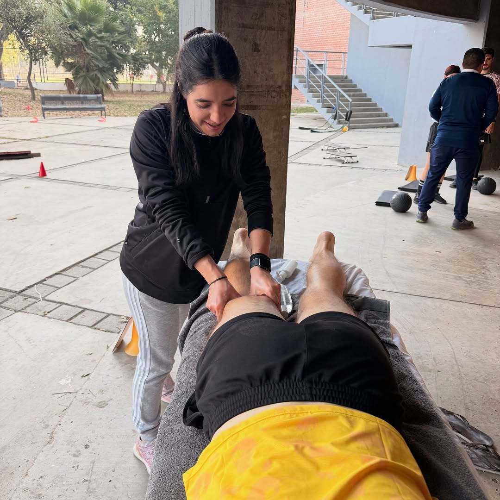
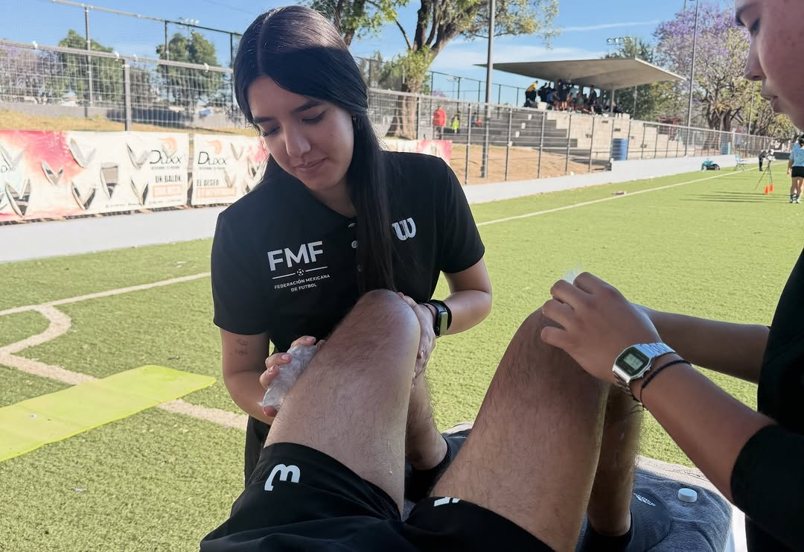
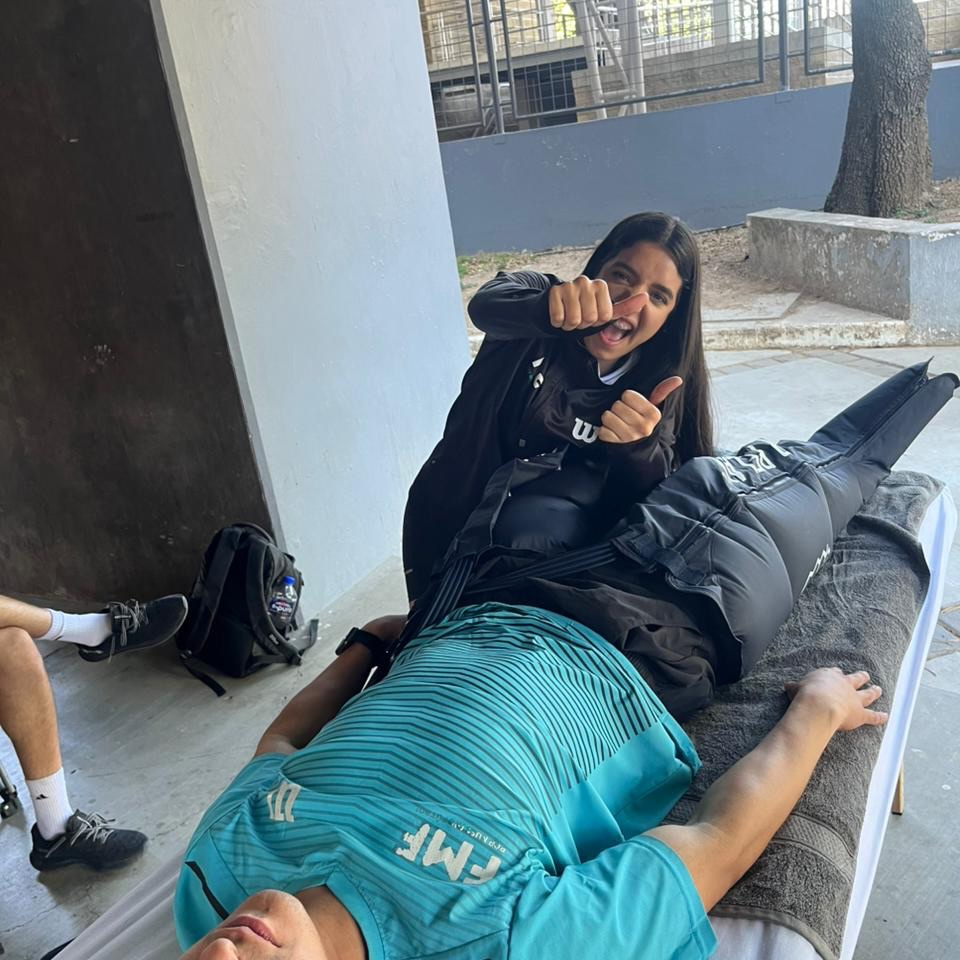

Rehabilitación física
Recuperación de lesiones musculares y articulares: esguinces, contracturas, tendinopatías y dolor de espalda o cuello.
Soy Valeria Ponce, fisioterapeuta. Te acompaño en tu recuperación con tratamientos a tu medida — en consulta o con servicio a domicilio en Guadalajara.
"Eres tu proyecto más importante, no te descuides."
Fisioterapeuta enfocada en ayudarte a moverte mejor y sentirte bien. Cada cuerpo es distinto: por eso evalúo, diseño y ajusto tu tratamiento de forma personalizada, sesión a sesión.

Tratamientos diseñados para tu lesión, tu ritmo y tus objetivos.
Recuperación de lesiones musculares y articulares: esguinces, contracturas, tendinopatías y dolor de espalda o cuello.
Prevención y tratamiento de lesiones deportivas, readaptación al entrenamiento y mejora del rendimiento.
Técnicas manuales para aliviar dolor, liberar tensión muscular y recuperar movilidad articular.
Acompañamiento después de tu cirugía para recuperar fuerza, movilidad y confianza de forma segura.
Masaje de descarga y relajación muscular para deportistas y personas con estrés o tensión acumulada.
Programas de ejercicio guiado y progresivo para fortalecer, prevenir recaídas y mantener tus resultados.
Platicamos sobre tu dolor o lesión y evalúo tu movilidad, fuerza y postura.
Diseño un plan de tratamiento claro, con objetivos y tiempos realistas.
Sesiones de terapia manual, ejercicio y técnicas según tu caso.
Medimos tu progreso y te dejo ejercicios para mantener los resultados.
Trabajo en campo con deportistas y atención a domicilio en Guadalajara.


Elige el día y la hora que mejor te acomoden. Recibirás confirmación al instante.
¿Prefieres escribirme directo? WhatsApp 33-2493-3064 · DM en Instagram
Sígueme para tips de movilidad, ejercicios y disponibilidad de citas.